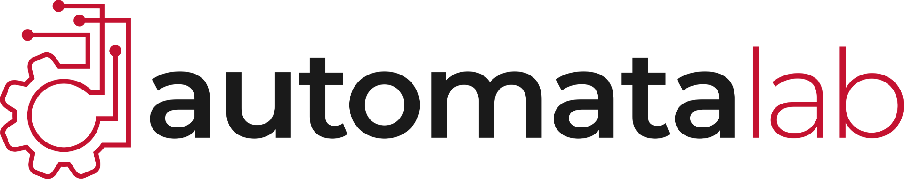

Work
Experience & Roles

Research Assistant — Multi-Robot Communication
Automata Lab, WPI · Prof. Kevin Leahy
- Contributed to a research paper under submission on an optical communication system using Prophesee EVK4 event cameras and high-frequency LED signaling, achieving 95%+ decoding accuracy during motion and 7× faster processing over prior EKF-based methods.
- Led hardware setup and integration of event camera sensors with ROS2; developed simulation frameworks, visualizations, and performance plots to validate system behavior across motion and lighting conditions.
- Implemented tracking pipeline bug fixes and supported real-world testing of the transmitter-receiver system, contributing to reliability ahead of multi-agent deployment.
- Integrated AWS DeepRacer with ROS2 Teleop and Nav2 packages for autonomous control and SLAM; employed Prophesee EVK4 event cameras for real-time perception resulting in smoother navigation and faster data exchange.
Grading Assistant — Multi-Robot Systems (RBE510)
Worcester Polytechnic Institute
- Graded assignments using Python scripts; applied knowledge of IMU sensors and state estimation to evaluate graduate-level work.
- Provided one-on-one tutoring on IMU sensor integration, UKF/EKF state estimation, and depth estimation using computer vision.
Graduate Assistant — Control Systems (RBE 3011)
Worcester Polytechnic Institute
- Supported 60 students in mastering control systems concepts, conducting weekly MATLAB lab sessions covering signal processing and motion planning.
- Delivered personalized guidance to ~15 students weekly, contributing to a class average increase from 75% to 90% on assessments.
Secretary — IEEE-RAS WPI Chapter
Worcester Polytechnic Institute
- Coordinated robotics events, workshops, and technical talks to promote research and student engagement.
- Managed communications between faculty, industry speakers, and 50+ student members.